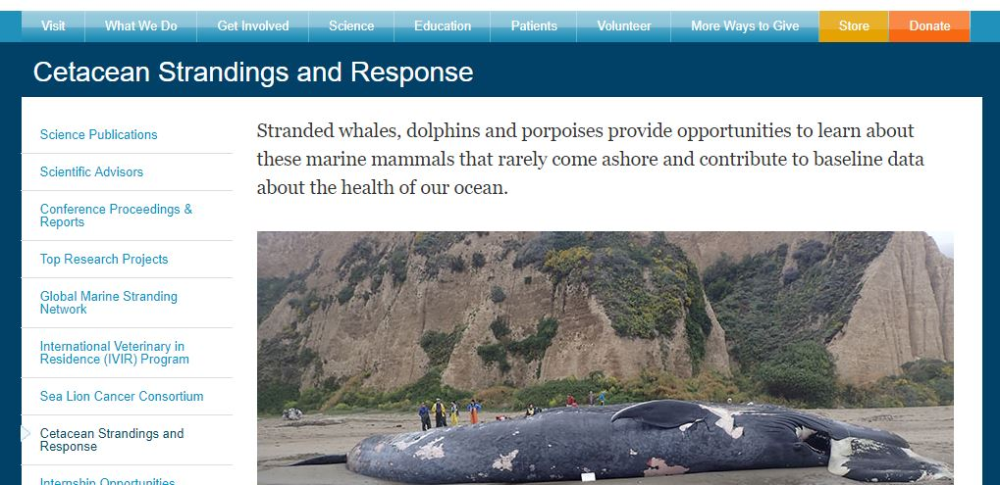

I see you but I can't find you.
Marco? POLO!
For this assignment I'm going to continue to use The Marine Mammal Center's website as it is a good website for information as I mentioned earlier but how do you know where you are and how did you get there?
Breadcrumbs and bookmarks
Just like Hansel & Gretel and their ill-fated walk into the woods (and possibly serious abandonment issues that are costing them tons of money in therapy - thanks mom & dad), they used breadcrumbs to create a trail to get them back home. Unfortunately for them, in the story, the birds ate their breadcrumbs and well, they found themselves lost & at the mercy of a witch who enticed them into her gingerbread house. One could think of the gingerbread house in one of two ways -
- Yes! this is where I want to be & what I'm looking for. or
- This can't be right. How did I end up here and how do I get out of here?
Found what I want ... but where am I?
TMMC's navigation works but still can get you lost. You have a classic nav bar at the top with the ten buttons to choose from, but once you pick an item, you're brought into the old style framework that was very dominant in the early 2000s.
The ease of the left-hand menu is there - simple & easy to read. But how do you know where you really are? Which of the above heading choices did you come from? In this instance you could be under "What We Do" but in fact you're under "Science".
If the main nav bar had some kind of way to highlight the menu choice to keep you aware of how you got there it would be very helpful. I would suggest inverting the colors so that the user can quickly see the color differentiation quickly & make that mental note of where this section came from. This could work for black & white/high contrast colors too.
Where do we go from here?
Being a website that mixes a lot of things for a lot of people has its challenges. I think this is an instance where you have a lot of scientists and passionate individuals who are very knowlegdable in their specific field yet don't know how to exactly dissemenate this information to the general public in an easy fashion. So this begs the question, how do you create that balance of getting just enough information to those who only need some data versus getting all of the data to the people who need more? As Shakespeare wrote, "Ay, there lies the rub."